1917—American Dressmaking Step by Step
by Mme. Lydia Trattles Coates
Chapter 12—Maternity and Infants' Garments
Lesson 267—Maternity Garments
The instructions which have been given for other garments are followed in making maternity garments. There is no material difference in the construction, but the selection of style, line, and color should be given special attention. The style and lines should be as up-to-date as possible and yet, under no circumstances, should there be tight lines or lines which expose the figure to any extent. The colors should always be subdued, yet a soft cheerful color in preference to black and somber grays is usually preferred.
For the Skirt there should be either fulness at the top or plaits which can be easily adjusted. Most maternity skirts have an extension at the top in front which can be turned over inside of the belt and the front length let down from time to time as the figure demands. A soft elastic should be used for the inside belt and the regular routine for skirt making followed. (Lesson 304.)
For the Waists and Coats practically any loose style may be chosen and made up in accordance with waist instructions (Lesson 303) and coat instructions (Lessons 297 and 298).
In case a fitted lining for the waist is desired, make a French lining in accordance with Lesson 305. Instead of stitching up the side seams, join a strip of material to each side of the seam from the shoulder to the bottom of the garment, cutting the strip considerably wider at the bottom line than at the top. Use a French seam 3/8 of an inch wide when finished. (Lesson 60.)
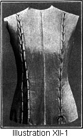Through the center of each of these seams work eyelets (Lesson 255) and then lace the garment together exactly the same as a corset, re-adjusting the size as often as necessary. (Illustration XII-1.)
The Brassieres may also be laced in front as is the lining, altho many prefer to make the eyelets and extension for the lacing and closing under the arm; but this is not so convenient as the front-lacing for the expectant mother.
The Underwear should be very loose, light, and comfortable. It should be of a style easily adjusted and should always hang from the shoulders.
Lesson 268—Infants' Wardrobe
There is usually some question as to just what garments and articles should be made, how many of each to make, the quality and amount of material to purchase, and the best methods of making the layette.
Below is given a list of garments and articles which the average expectant mother will need. Of course, the woman with abundant means may add to the quantity and quality of each, expending hundreds or even thousands of dollars. On the other hand, the woman of "very small means" may be able to economize on both quality and quantity. A dainty, simple, serviceable, and in every way satisfactory layette can be purchased for a very small amount. This is especially true if the prospective mother is a thrifty buyer and handy with the needle. She can make the garments herself and finish them with dainty hand work.
The following articles are usually found necessary, no matter what the circumstances of the mother may be:
- 4 Dresses
- 4 Pinning Blankets
- 6 Bibs
- 6 Day slips
- 4 Dozen Diapers
- 1 Coat
- 6 Night slips
- 1 Diaper Cover
- 2 Caps or Bonnets
- 3 Petticoats (flannel)
- 3 Flannel Bands
- 1 Veil
- 3 Petticoats (white)
- 3 Shirts
- 2 Shawls
- 2 Kimonos or Wrappers
- 6 Pairs Stockings
- 1 Carriage-robe
- 2 Sacks
- 3 Pairs Bootees
- 1 Receiving Blanket
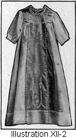Lesson 269—Infants' Dresses (Illustration XII-2)
There is probably no human experience known to the heart of a woman which causes quite the wonderful thrill as does the making of the dresses for the newcomer.
Many women are very apt to overdo this matter, and to have the garments altogether too elaborate, putting much unnecessary work on them. While every stitch should be done by hand, the little garments should be just as simple as possible. The garments shown in the accompanying illustrations are, all of them, desirable models.
Any of the beautiful soft white cotton or linen materials may be used for the dresses.
To Make Infants' Dresses
- Buy the pattern for infants' size, and choose a style which pleases you. No measurements or alterations are necessary.
- Fold the goods economically. (Lesson 3.)
- Lay on the pattern correctly. (Lesson 34.)
- Mark all perforations with tailors' tacks. (Lesson 34.)
- Mark all center lines. (Lesson 34.) If you wish to finish any part of the garment with embroidery scallops, mark the edge with a row of colored bastings.
- Cut out. (Lesson 35.) Do not cut close to any line which is to be finished with embroidery scallops. The edges are trimmed after the embroidery work is finished.
- If the dress has tucks make same. (Lesson 119.)
- Put in any insertion desired. (Lesson 227.)
- Make all seams. The seams will be either French seams (Lesson 60) or they will be joined with veining or seaming, using the roll seam (Lesson 65).
- If any portion of the garment is to be finished with embroidery scallops or embroidery design, it will now be stamped. Follow carefully instructions on pattern for correct stamping.
- Embroider all scallops or designs which have been stamped. (Lessons 251 to 254, inclusive.)
- Join yoke with seaming or French seam. (Lesson 235 or 60.)
- Join sleeves to garment with French seam (Lesson 60), veining or seaming (Lesson 235).
- If sleeve bands are used, make according to Lesson 99 or 100.
- Make placket or closing. (Lesson 192 or 196.)
- If the neck is not finished with embroidery scallops, it will be finished with a narrow facing or bias binding. (Lesson 96 or 100.)
- Sew on all trimmings or edgings (Lesson 230 or 231), or you may feather stitch (Lesson 246) around the neck and sleeve bands.
- Put in the hem. You may finish with tiny hemming stitches (Lesson 50), or hemstitch (Lesson 236, 237, or 238), or feather stitch (Lesson 246). Of course if embroidery flouncing has been used for the garment, no hem is necessary.
- Sew on buttons (Lesson 214), and make buttonholes (Lesson 207). Many women prefer to fasten the dresses with tiny gold baby pins, instead of using buttons and buttonholes.
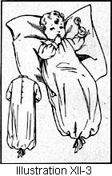Lesson 270—The Night Slips (Illustration XII-3)
These Nightdresses will be chosen of a material depending entirely upon the month in which the stork is expected. For a Winter baby, they should be made of a first-class quality of flannel or flannelet; for a Summer baby, they should be made of nainsook.
To Make the Nightslips
Follow all of the rules for the making of the dress, eliminating all tucks and unnecessary trimmings. One addition, however, is made. Buttons are sewed on and buttonholes made (Lessons 214 and 207) a few inches from the bottom of the flannel nightslip, so that the bottom edge can be folded up to keep the little feet from getting uncovered and exposed, or a draw-string may be run through the hem at the bottom.
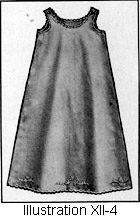Lesson 271—The Petticoat (Illustration XII-4)
For petticoats one may use white nainsook or lawn or batiste, or any fine white material, and make them by hand in any desired style, proceeding as follows:
- Fold the goods economically. (Lesson 3.)
- Lay on the pattern correctly. (Lesson 34.)
- Mark all perforations with tailors' tacks (Lesson 34), and run a colored thread close to any edge which is to be finished with buttonholed scallops.
- Mark all center lines. (Lesson 34.)
- Cut out. (Lesson 35.) Leave all edges uncut which are to be finished with buttonholing.
- Make all seams with French seams (Lesson 60), or join with seaming (Lesson 235).
- Join band or waist portion to skirt portion. (Lesson 148.)
- Make placket. (Lesson 192, 195, or 196.)
- If either the top or the bottom of the garment is to be scalloped, or if you wish embroidery designs, stamp the scallops or designs.
- Embroider all edges and designs which are stamped. (Lesson 253.)
- If the top is not embroidered, finish it with a narrow facing (Lesson 96), and then apply the trimming (Lesson 230 or 231).
- If the arm-scye is not scalloped, finish with an exceptional facing (Lesson 98) and then whip on the trimming (Lesson 230 or 231).
- Make buttonholes (Lesson 207) and sew on buttons (Lesson 214), or it may be fastened with tiny safety-pins.
- Hem. (Lesson 85.) Use fine hemming stitches (Lesson 49 or 50), or hemstitch (Lesson 236, 237, or 238).
- Put on the ruffles (Lesson 124), or any trimming desired.
Lesson 272—Flannel Petticoats
The Flannel Petticoats should be made of white flannel of as good a quality as the expenditure of this layette will afford, as a poor quality of flannel proves very unsatisfactory. But even the best of flannel, with careless washing, will grow harsh.
To Make the Flannel Petticoat
- Fold the goods economically. (Lesson 3.)
- Lay on the pattern correctly. (Lesson 34.)
- Mark all perforations with tailors' tacks. (Lesson 34.)
- Mark all center lines (Lesson 34) and run a colored thread around all edges to be buttonholed or scalloped.
- Cut out. (Lesson 35.) Do not cut close to any line which is to be finished with embroidery scallops, but leave the uncut material some distance from the line which is marked to show the edge of the garment.
- Make all seams. A plain seam (Lesson 56), feather stitched flat, is very satisfactory. (Lesson 246.)
- Stamp all edges to be buttonholed.
- If a band is used for the upper portion, make according to Lesson 148 on bands. Instead of machine stitching the edges, they may be feather stitched (Lesson 246).
- If a waist portion has been made, join to the skirt portion (Lesson 148), and finish the top with embroidered scallops (Lesson 253).
- Make placket or closing. (Lesson 192, 195, or 196.) Sew on tape to tie the closing instead of using buttons and buttonholes.
- Buttonhole the scallops to finish the arm-scye. (Lesson 253.)
- Finish the bottom with a feather stitched French hem (Lesson 88), or buttonhole a scalloped edge.
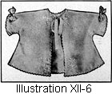Lesson 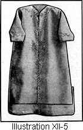273—Kimonos, Wrappers, and Sacks (Illustrations XII-5 and 6)
These are usually made of flannelet, albatross, or a good quality of French flannel and lined with a soft silk. It is better to have a lining of white, so that in frequent laundering the lining will not become faded and old-looking. You will make the kimonos and the wrappers as follows:
Follow all of the rules for the making of the dress.
The linings are put in by turning the edges of the garment and the edges of the lining together and slip stitching or finishing in any desired manner.
The facings are made as is a sewed-on overfacing. (See Lesson 95 for details for its making.)
If the yoke is lined, apply as instructed in Lesson 163.
The Sacks are usually cut in one piece. (If they are to be embroidered, do this work before cutting.)
Finish with embroidery scallops (Lesson 253), or bind the edges with ribbon (Lesson 99 or 100), or feather stitch the edges (Lesson 246).
If solid embroidery work is done on the sack, do all of this work before the lining is put in or the edges bound.
If a lining is used, baste the lining and the outside together and scallop or bind them together.
Lesson 274—Pinning Blankets
The Pinning Blankets are to keep the legs and lower part of the baby's body warm and are dispensed with when climatic conditions permit. They should be made of some soft, warm material, either of good quality of wool or of cotton flannel.
To Make the Pinning Blanket
- Fold the goods economically. (Lesson 3.)
- Lay on the pattern correctly. (Lesson 34.)
- Mark all perforations and construction marks with tailors' tacks. (Lesson 34.)
- Mark all center lines. (Lesson 34.)
- Cut out. (Lesson 35.) Cut the body portion double.
- Make all seams. (Lesson 55.) Make plain seams on the skirt and press open. (Lesson 56.)
- Make the body portion exactly as a band is made. (Lesson 148.) If it is a fitted body portion, turn all edges toward each other and baste. It is then more desirable to feather stitch the edges together than to machine stitch.
- Slip the skirt portion between the folds of the body portion exactly the same as a joining band is applied. (Lesson 149.)
- With fine feather stitches finish the joining. (Lesson 246.)
- At the left side of the body portion a slash is made through which to bring the ends which pass around the body. Bind this slash exactly as if it were a bound buttonhole. (Lesson 212.)
- Fold back the front edges and the bottom of the pinning blanket and hem (Lesson 88), or feather stitch (Lesson 246).
Lesson 275—The Diapers
The Diapers should be made of Diaper cloth, bird's-eye cotton, or stockinet. The diapers should be cut 27 inches square and should be hemmed with a narrow hem by hand. A thread should be drawn in cutting so all edges are cut perfectly straight and the diaper fold even. The larger size diaper is more practical than the 18x36 size, as it can be used as long as diapers are required.
Lesson 276—The Diaper Cover
A rubber or stockinet diaper should be made for protection on occasions when you are traveling or taking the child away from home, but it should be removed at the earliest possible moment, as the waterproof diaper is not porous enough to properly let the air to the child's body. The diaper covers are usually purchased ready-made.
Lesson 277—The Flannel Band
To Make the Flannel Band
- Cut a band of fine flannel, making a strip about six inches wide and the length of the width of the material. The flannel is always torn crosswise of the goods—not cut lengthwise, as are other bands.
- The Flannel Band is not hemmed. It may be pinked or left with the edges raw, as the band must have plenty of "give" and "stretch."
Lesson 278—The Shirts
It is usually best to buy the shirts ready-made. They should have long sleeves and a high neck. The shirts may be of all-wool, silk-and-wool, cotton-and-wool, linen material, or flannel, but they should be most carefully chosen and be only of the finest, softest texture. The greatest possible care must be taken in their laundering.
If you make the little shirts yourself, make them of a good quality of flannel, as the nainsook or linen shirts would not be used until the child was at least six weeks old, even tho it came in the Summer time.
To Make the Flannel Shirts
- Fold the goods economically. (Lesson 3.)
- Lay on the pattern correctly. (Lesson 34.)
- Mark all perforations with tailors' tacks (Lesson 34), and mark with a row of basting threads all edges which you wish to embroider.
- Mark all center lines. (Lesson 34.)
- Cut out. (Lesson 35.) Do not cut away any of the edges which you wish to finish with a scalloped edging. First embroider the edges and then cut.
- Make all seams into a plain seam. (Lesson 56.) Press open and feather stitch flat. (Lesson 246.)
- If the shirt opens only part of the way down, make a placket. (Lesson 195.)
- Sew on tape for any fastenings instead of buttons and buttonholes.
- Stamp all edges to be buttonholed.
- Buttonhole around the top edge of the shirt and around the edges of the arm-scyes (Lesson 253), and if the shirt is open all the way down the garment, buttonhole the entire opening.
- Buttonhole the bottom edge of the shirt or turn a flat hem and finish with feather stitching. (Lesson 88.)
Lesson 279—The Stockings
It is a mistake not to put stockings on a new-born baby. The bootees or socks alone, leaving the little knees without this extra covering, are not desirable. The correctly dressed baby has the warmth equalized over the body. The stockings should reach high enough over the thighs so the knees and joints are covered. They should be of a very soft wool for Winter, and cotton-and-wool for Summer. Only white stockings should be put on the baby, and ribbed wool stockings seem to shrink less than the plain ones when washed. Whether ribbed or plain tho, great care must be taken in washing the stockings so they do not shrink or harden.
Lesson 280—The Bootees
The Bootees are usually knit or crocheted, but may be made of the same material as the coat and embroidered, and eyelet worked and laced together with ribbons, or the edges may be bound with ribbon and tiny buttons sewed on and buttonholes worked, or many effective ideas worked out. Many mothers make little moccasins of soft white kid, embroidered in white or a delicate pink or blue, depending on the sex of the baby. Feather stitching (Lesson 246) makes a dainty finish, and the eyelets may be laced with matching ribbon.
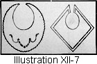Lesson 281—Bibs (Illustration XII-7)
Choose any of the many styles of bibs which may please you. Cut them out of fine lawn or linen or pique. Finish all of the edges with embroidery scallops or lace, or turn a narrow hem and feather stitch. A quilted bib should be worn underneath. For dress-up wear bibs of linen lawn or handkerchief linen are frequently selected, daintily embroidered and finished with a narrow frill of fine Valenciennes lace.
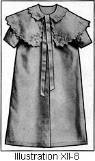Lesson 282—The Coat (Illustration XII-8)
In planning the coat, the time of the baby's arrival should be taken into consideration. The Summer coat should be of a good quality pique for everyday wear, but a good cashmere or silk may be provided for extra occasions. In Winter the coat should be of a warm flannel material well interlined and of sufficient warmth to protect perfectly.
To Make the Infants' Coat
- Buy the coat pattern for infants' size. No measurements or alterations are necessary.
- Fold the goods economically. (Lesson 3.)
- Lay on the pattern correctly. (Lesson 34.)
- Mark all perforations with tailors' tacks. (Lesson 34.)
- Mark all center lines. (Lesson 34.) If you wish to finish any part of the garment with embroidery scallops, mark this edge with a row of colored bastings.
- Cut out. (Lesson 55.) Do not cut close to any line which is to be finished with embroidery scallops. The edges are trimmed after the embroidery work is finished.
- If the coat is to be lined, cut out the lining according to the above instructions.
- Make all seams. (Lesson 56.)
- If any portion of the garment is to be finished with embroidery scallops or embroidery design, it will now be stamped. Follow carefully instructions on pattern for correct stamping.
- Embroider all designs (Lessons 251, 252, and 254) before the lining is put into the coat.
- Baste the coat and cape lining into the coat and cape, keeping all edges and seams even.
- The edges of both coat and cape may be buttonholed. (Lesson 253.)
- If the embroidery scallops are not desired, turn the edges of the coat to the edges of the lining and finish with invisible slip stitches (Lesson 51), or with feather stitches (Lesson 246).
- Or in the unlined coat one may hem the edges of both coat and cape, finishing with invisible slip stitches.
- Join sleeves to garment. (Lesson 174.)
- If sleeve bands are used, make according to Lesson 148.
- The cape may be sewed to the garment, but it is usually left separate.
- Put on the collar. (Lesson 165 or 166.)
- If you are buttoning the coat, sew on buttons (Lesson 214) and make buttonholes (Lesson 207).
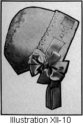Lesson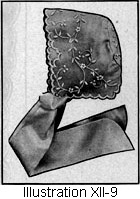 283—Caps and Bonnets (Illustrations XII-9 and 10)
The Cap or Bonnet is usually cut out of the same material as the coat or of handkerchief linen with a silk lining. The cap or bonnet may be tucked, shirred, embroidered, or trimmed with lace, ribbon, or fur.
The seams are joined with very narrow insertion, or French seams. It is better to have the strings of fine linen than of ribbon because the linen will launder. The ends of the strings may be hemstitched, tucked, or trimmed with lace.
Rosettes may be used for the sides of the bonnet.
Very pretty caps and bonnets may also be knit or crocheted. Fine wool or silk may be employed for such caps, with a lining of white China silk. If desired the ties may be attached to the cap with baby-pins so that they may be more easily removed for washing.
Lesson 284—The Veil
The Veil should be of a fine, white net, bound on the edges with white silk ribbon. The net should be of a good quality which will bear washing frequently.
Lesson 285—The Shawl
The Shawl may be knit, may be of French flannel, cashmere, albatross, or any of the soft materials which will afford warmth. It is made as follows:
- The shawl is usually cut double, and sometimes lined.
- If unlined the edges may be embroidered in scallops (Lesson 253) or bound with ribbon (Lesson 99 or 100).
- If a lining is used: Baste the lining and the outside together, and finish exactly as if the shawl were unlined, by binding or buttonholing the edges together.
If solid embroidery work is used, do all this work before the joining of the lining to the outside, and before the edges are buttonholed or bound together.
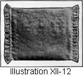Lesson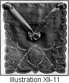 286—The Carriage-Robe and Pillow (Illustrations XII-11 and 12)
The Carriage-robe may be crocheted, knit, or may be of soft China silk tufted exactly as are quilts. Or it may be of flannel lined with soft silk, made as directed for the shawl. (Lesson 285.)
You will need many other things, such as the carriage-pillows and a carriage parasol, etc.
As this book covers only the subject of garment-making, space will not permit a mention of these numerous details.
Lesson 287—The Receiving Blanket
The Receiving Blanket is to wrap baby in upon the arrival. It is made of cheese-cloth 36x40 inches or 36 inches square and lined with cotton. The edges are then turned together and finished with the Blanket Stitch. The blanket is tied exactly as is a quilt.